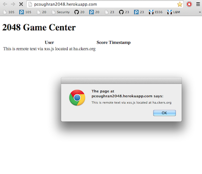
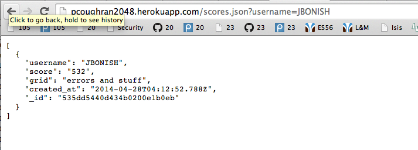

The following document reports the potential security threats discovered at http://pcoughran2048.herokuapp.com/, Patrick Coughran's web app which stores 2048 scores. My job was to determine whether or not the app is ready for public use. My findings suggest that the app is too vulnerable at this point to trust in the dangerous world wide web.
Starting with black box methods, i.e. attacking without observing source code, I immediately found the app to be vulnerable to at least silly attacks by inserting a cartoon picture of dog poop as my username, which the website did in fact display. I realized that this made it likely to be vulnerable to the most basic attack, inputting a script tag. After confirming, I looked at Patrick's code to find more vulnerabilities using third-party tools.
The site is riddled with basic security problems. An attacker can steal cookie information from the site, change the site's content, mess with the database associated with the site, or input invalid or unfair data.
One of the main threat and one of the easiest vulnerabilities to take advantage of with this app is its lack of input validation. Without checking if some input (like the username) is malicious, an attacker can use cross site scripting to maliciously attack a website. As shown in this picture,

I was able to input a script tag whose source came from the website ha.ckers.org which gave example script codes to show what is capable with XSS. In this case, the code only raised an alert box, but much more malicious things are possible without input validation; the code used for my attack also would have accessed any cookies stored and displayed them in the alert box as well --
document.write ("This is remote text via xss.js located at ha.ckers.org " + document.cookie);
alert ("This is remote text via xss.js located at ha.ckers.org " + document.cookie);
You can imagine why an attacker being able to access these things can be dangerous.
A wide range of malicious attacks can be carried out with XSS. As shown (sort of) in my example, cookie information can be stolen, which can sometimes be very dangerous. It would also be easy to simply go in and delete all of the HTML in the document, or manipulate it. The fact that so many things can be done with this method makes it a severe risk, but one that is fairly simple to fix
To fix this vulnerability, just add server-side input validation. If '<' or '>' are found, delete them or encode them. Checking input server-side is key as proxies can be used to bypass client-side validation.
A common mistake in cross-origin resource sharing is to allow cross-origin JavaScript requests from all domains. This can be seen in Patrick's code here
res.header("Access-Control-Allow-Origin", "*");
This allows people to POST to the app from anywhere, and they can post whatever they want.Assuming the previous problem with input validation is fixed, the most you have to worry about is a user posting a score of 99999 or something to skew the high scores.
To disallow people from posting from anywhere, change the * to the 2048 game URL. It will be possible to cheat the score in other ways, but not with something like curl now.
As seen by this screenshot of /scores.json page of the web app,
I was able to post an invalid input for the grid. You can input any string here.
Though people can input weird things instead of JSON, it won't be overly dangerous as long as the XSS problem has been fixed.
To fix this small problem, simply check all inputs on the server side to make sure they are of the format desired.
The site needs multiple security measures implemented before deployment. It's a good thing I was hired, because malicious attacks could have led the site to become corrupt with invalid data. The most important aspect to implement is server-side input validation. I can do the job, for about $7 billion/hr.